10 events, 13 points
Culture
Arts, heritage, and creative expression.
About my Culture experiences
My Culture experiences allow me to appreciate different forms of art, music, traditions, and creative expression. Through these activities, I hope to broaden my perspective, discover new interests, and gain a deeper appreciation for the diversity and creativity of the people around me.
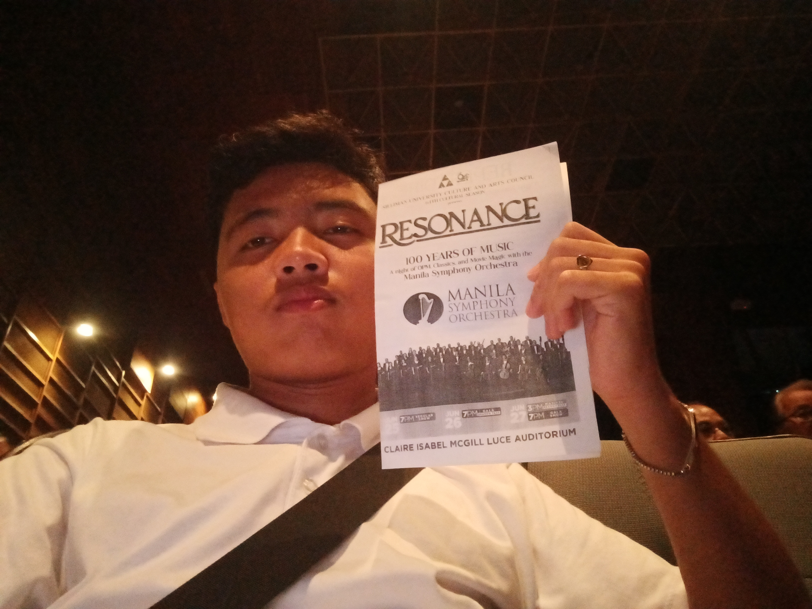
Resonance
June 27, 2026, 7:00 PM
1 point
Resonance
June 27, 2026, 7:00 PM 1 pointReflection
Attending the Manila Symphony Orchestra concert was a memorable experience because it was my first time watching a professional orchestra perform and my first time entering an auditorium. The night before, my season pass had already been punched by the usher, but I was asked to leave because I violated the dress code by wearing sweatpants. Thankfully, I got another opportunity to attend the concert the next day, which was also their last day in Silliman. I was worried that I might not get in because my ticket had already been punched, but the staff kindly gave me a complimentary silver ticket. I immediately felt relieved and excited. When I entered the auditorium, I was amazed by how elegant everything looked. It felt like I had stepped into a different world. Since it was my first time seeing an orchestra perform in person, I was excited to experience the concert.
The concert started with Light Cavalry Overture by Franz von Suppé, and its upbeat rhythm immediately caught my attention. However, I found some of the other classical pieces boring because they felt repetitive and lasted longer than I expected. Even though I respected the musicians' skill, the classical set was the part of the concert I enjoyed the least. This made me realize that appreciating the skill behind a performance does not necessarily mean that every part of it will match my personal taste. My favorite performance was Baleleng by Max Surban. I did not expect to hear it, and it immediately reminded me of when I was still a child. My grandfather used to play songs like this whenever we visited his farm, where I would just play in his hut. The orchestra's arrangement of the piece was beautiful, and it became the most meaningful part of the concert for me because it brought back memories and emotions from my childhood. I also enjoyed the orchestra's Tribute to Henry Mancini and the music from Pirates of the Caribbean because they were familiar and exciting to hear. Another moment that surprised me was when many audience members shouted "More!" after the performance. I expected everyone to remain quiet because the concert felt very formal, but it showed me that audiences can freely express their appreciation for a performance.
I believe the Manila Symphony Orchestra achieved such excellence through years of practice, dedication, discipline, and teamwork. Watching them perform gave me a greater appreciation for the amount of work required to create music at that level. It also made me realize that experiencing music live can be very different from simply listening to it. This experience also made me more open to orchestral music, even though some classical pieces were not personally enjoyable for me. If I attend another orchestra concert in the future, I would be more prepared to listen to different styles and pay closer attention to how the musicians work together. Most importantly, I will remember Baleleng not only as a piece performed by an orchestra, but also as something that connected the experience to memories of my childhood.
Because of this activity, I am more open to appreciating orchestral music and different forms of performance, while also becoming more aware of how music can bring back memories and connect us to meaningful moments from our past.
Evidence of participation
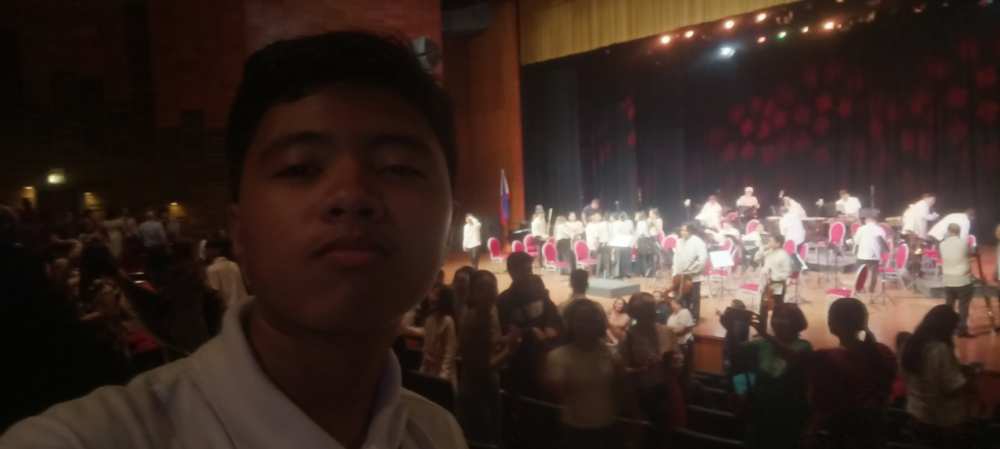
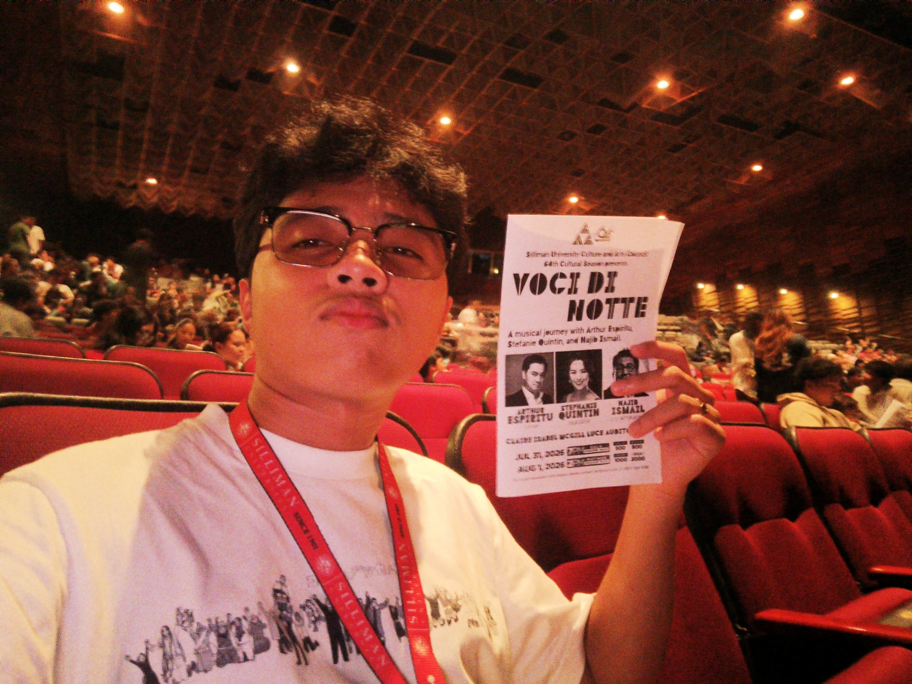
Voci Di Notte
July 31, 2026, 7:00 PM
1 point
Voci Di Notte
July 31, 2026, 7:00 PM 1 pointReflection
Voci di Notte was a cultural experience that featured singers and a pianist performing together. The program consisted of a male tenor and a female soprano who performed one after another, while the pianist remained throughout the program to accompany the singers. During the performance, the singers presented different pieces, including a duet where they not only sang together but also acted on stage. Although I could not understand the words of the songs because I did not know the language, I was still able to appreciate the performance through the singers' voices, the pianist's accompaniment, and the way the performers expressed themselves on stage.
What caught my attention the most was the technique of the singers. I particularly noticed their breath support, clean vibrato, and use of dynamics, which made their performances enjoyable to listen to. The duet was also one of the parts I enjoyed because the singers were able to combine singing and acting during the piece. I also noticed how well the piano accompaniment worked with their voices. Even though I could not understand the words, I was still able to appreciate the messages being portrayed through their voices, the piano, and their actions on stage. This made me realize that people can appreciate and understand something emotionally even when they do not completely understand its language.
Watching Voci di Notte made me appreciate the amount of dedication required from people who pursue the performing arts. Being a singer or pianist requires practice and a commitment to improving, while performing in front of an audience also requires courage and determination. The experience reminded me that communication does not always depend on understanding every word. Performers can still communicate emotions and messages through music, voice, and acting. I can apply this realization by being more open to different forms of art and culture, even when I am unfamiliar with them. If I were to watch another performance like this, I would also pay closer attention to the performers' techniques and how they communicate their message through their performance.
Because of this activity, I am more open to appreciating different forms of art and culture, even when I do not completely understand them, and I am more aware of the dedication and courage required to perform for others.
Evidence of participation
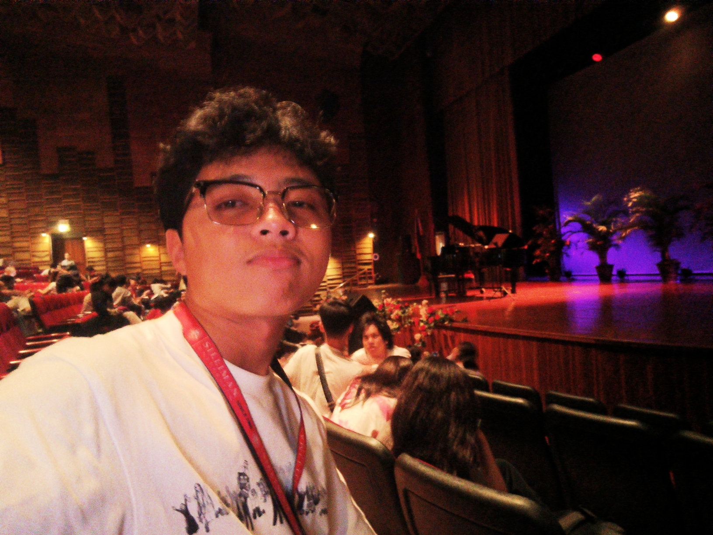
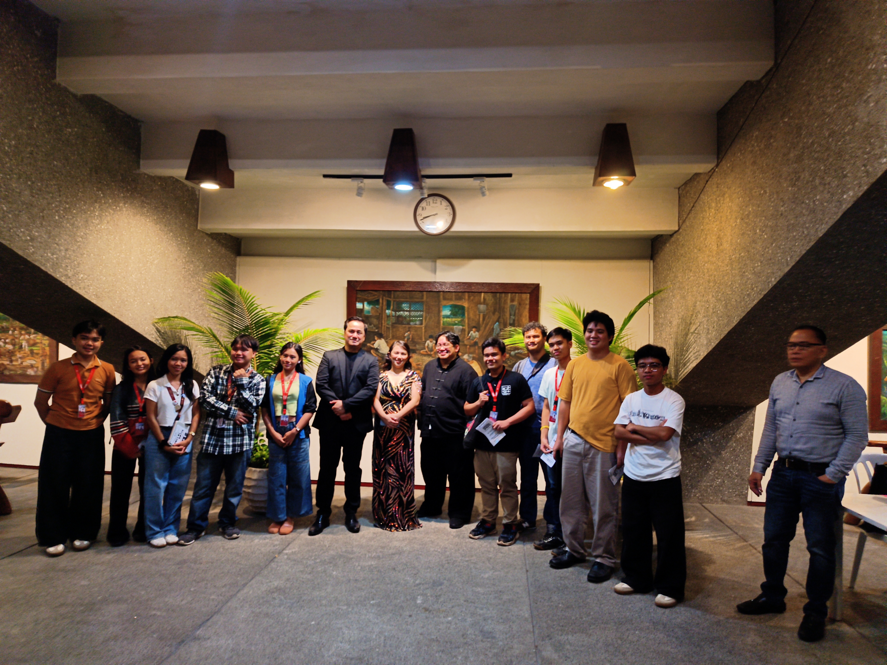
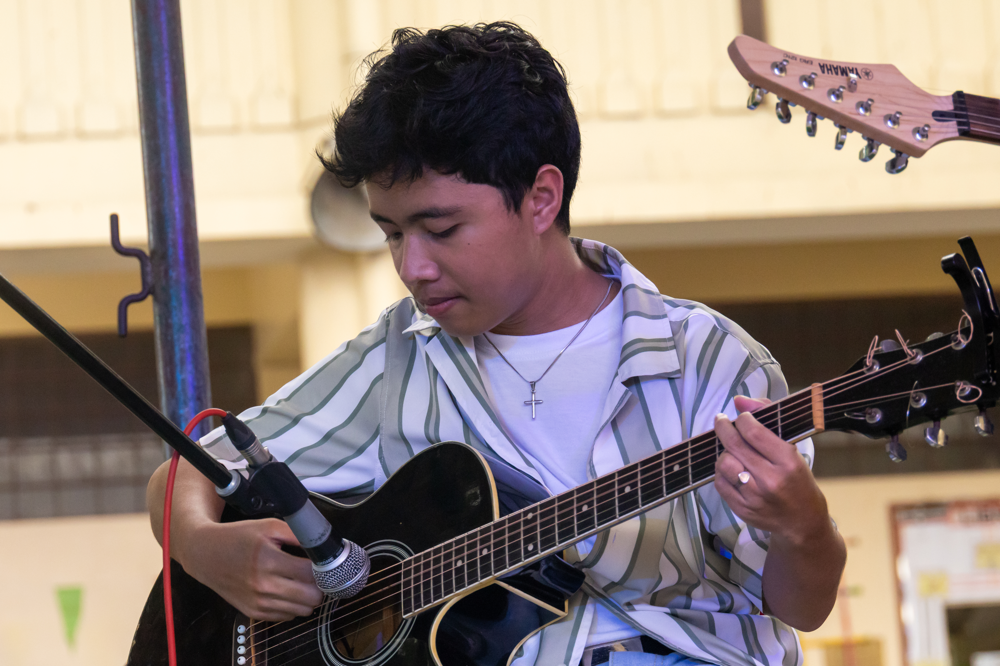
CCS Acquaintance Party
August 1, 2026, 3:00 PM
4 points
CCS Acquaintance Party
August 1, 2026, 3:00 PM 4 pointsReflection
I attended the CCS Acquaintance Party on August 1, 2026, at the Silliman University Elementary School Grounds. The event included performances, games, competitions, and, of course, food. I attended with my friends and bandmates from disBanded, along with other CCS students, faculty, and staff. I participated in the activities and also performed as part of an intermission number with my bandmates, where we played “Akin Ka Na Lang.”
One of the things I enjoyed most was performing with my bandmates, although our performance did not go perfectly. We made a mistake during the introduction and literally had to say “take two” before starting again. Despite that, it became a funny and memorable part of the experience. I also enjoyed meeting and becoming friends with some of my fellow freshmen. Before the party, I only had around one or two friends, but afterward, I had made several more. It made me realize that socializing and being willing to approach other people can help me build new friendships.
The experience helped me become more comfortable with socializing. I used to consider myself very introverted, but after meeting more people through activities like this, I became more comfortable interacting with others and started seeing myself as more of an ambivert. I realized that getting out of my comfort zone and talking to people can lead to meaningful friendships and enjoyable experiences. I would definitely participate in another acquaintance party because it was both fun and memorable.
Because of this activity, I am more open to socializing and meeting new people, knowing that stepping out of my comfort zone can lead to new friendships and memorable experiences.
Evidence of participation

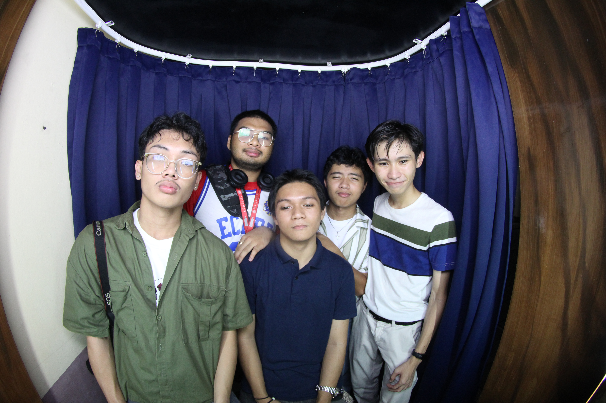
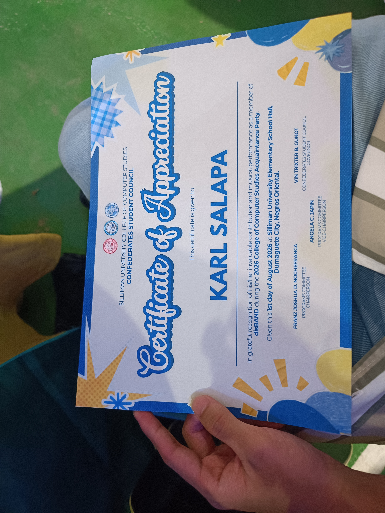
Video evidence
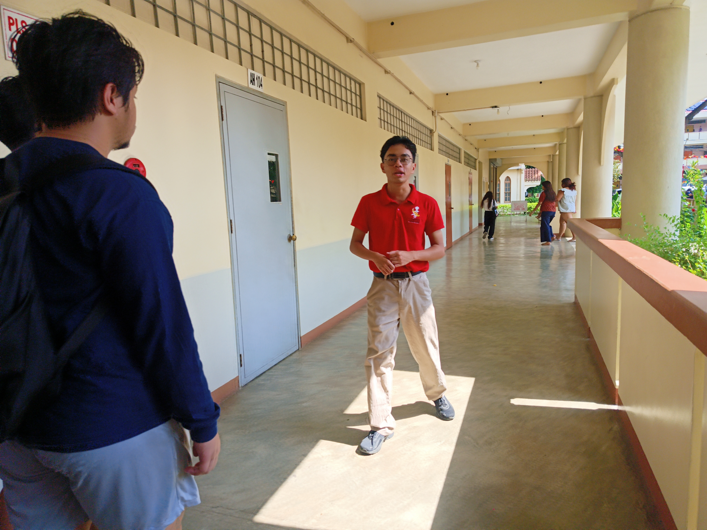
One Big Tuyok
August 19, 2026, 9:00 AM
1 point
One Big Tuyok
August 19, 2026, 9:00 AM 1 pointReflection
One Big Tuyok was a campus tour around Silliman University that I attended with my fellow GE10 classmates. The activity introduced us to different places around the campus while sharing historical information and fun facts about the university. I participated as a student and found the activity informative because I personally enjoy learning interesting facts about places and their history.
What I enjoyed most was learning the unusual stories behind different parts of the campus. One funny story was about Oriental Hall, which was once considered one of the stinkiest areas because it used to be a girls' dormitory. According to the story shared during the tour, boys who visited the dormitories to serenade the girls would sometimes have arinolas thrown at them. Another story that surprised me was about the Tree of Life and Death, which was associated with both a dark part of the university's history and stories of people gathering under the tree for more romantic reasons. These stories showed me that even familiar places can have interesting and unexpected histories behind them.
The activity made me realize that almost every school can have stories that can either surprise you or make you laugh. It also made me more curious about the history behind the places I see around campus every day. I would be interested in joining similar tours again, especially if they reveal more lesser-known stories about Silliman.
Because of this activity, I am more curious about the stories and history behind the places I encounter, especially the ones I normally pass by without thinking much about them.
Evidence of participation
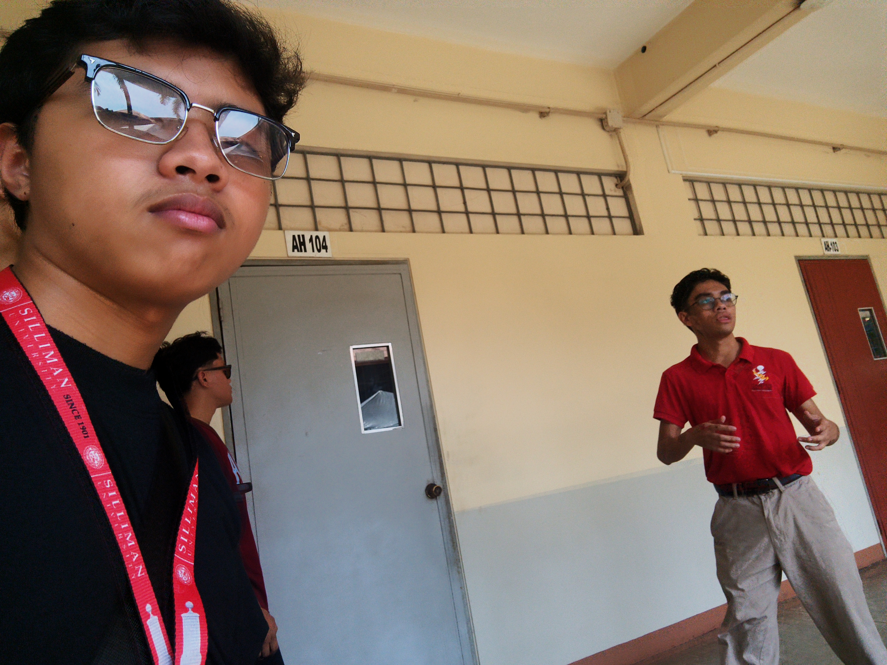
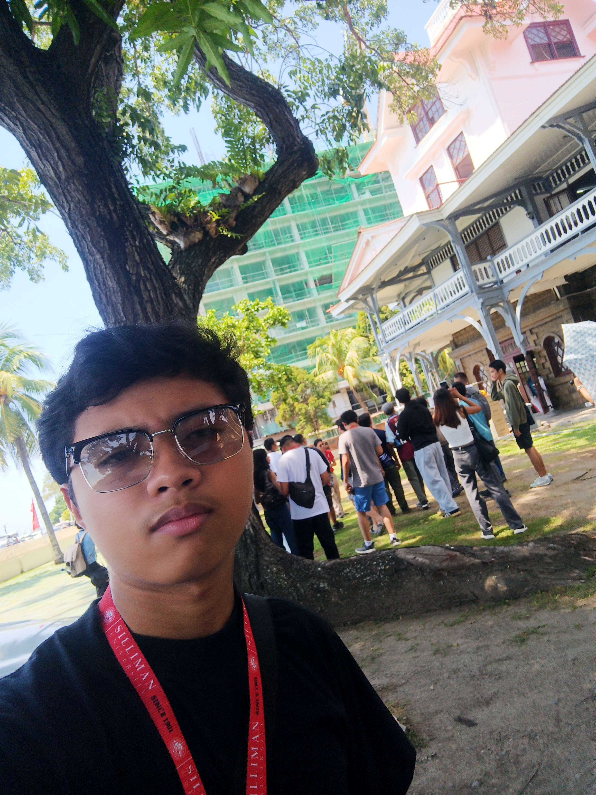
Parade of Lights
August 19, 2026, 7:30 PM
1 point
Parade of Lights
August 19, 2026, 7:30 PM 1 pointReflection
On August 19, 2026, I participated in the Parade of Lights as a photographer. The parade started from Portal West and passed through Sizzler’s, Fish 153, Katipunan Road, Channon Gate, Doltz Intersection, COPVA Buildings, and Roble Hall before ending at the Hibalag Grounds. Unlike the Parada Sillimaniana, the performers were only departments and organizations within Silliman University. I was with my SUCC Elders Gyeoul Padillo and Rhenelyn Chanthavysouk, along with my fellow SUCC Macro AJ Elentorio. This was also my first major event to shoot as an SUCC Macro.
Just like the Parada Sillimaniana, the event tested my patience, endurance, and photography skills. Since it happened at night, the heat was not much of a problem, but I eventually became really hungry because the parade ended around 10 PM while I usually eat dinner at 6 PM. Even though I was exhausted and hungry, I still had fun shooting the event. It was also a good experience because I got to photograph a major Silliman event as part of SUCC.
I learned that preparing for a major event is not only about bringing my camera and being ready to shoot. I also need to take care of myself, especially by eating before a long event. The parade also made me realize how vast Silliman University is because so many different departments and organizations were able to come together for one event. I would definitely do it again, but next time, I’m eating first.
Because of this activity, I am more prepared for major events and more aware of the importance of taking care of myself while doing something I enjoy.
Evidence of participation
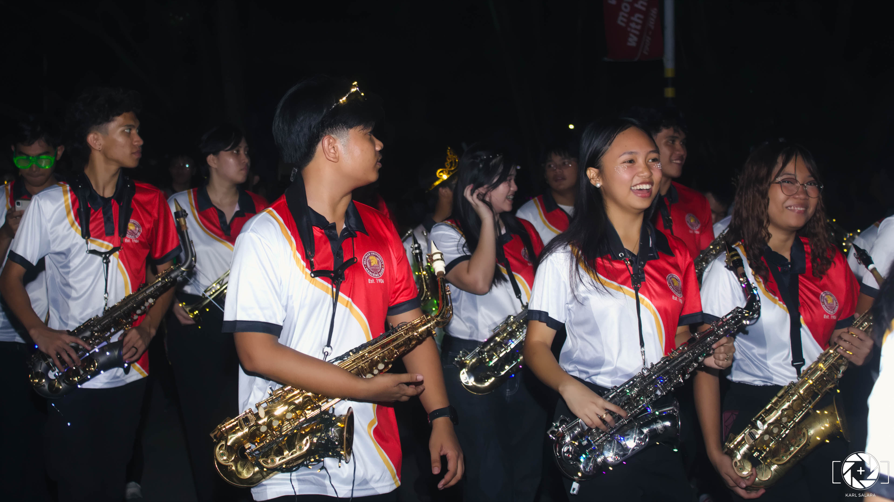
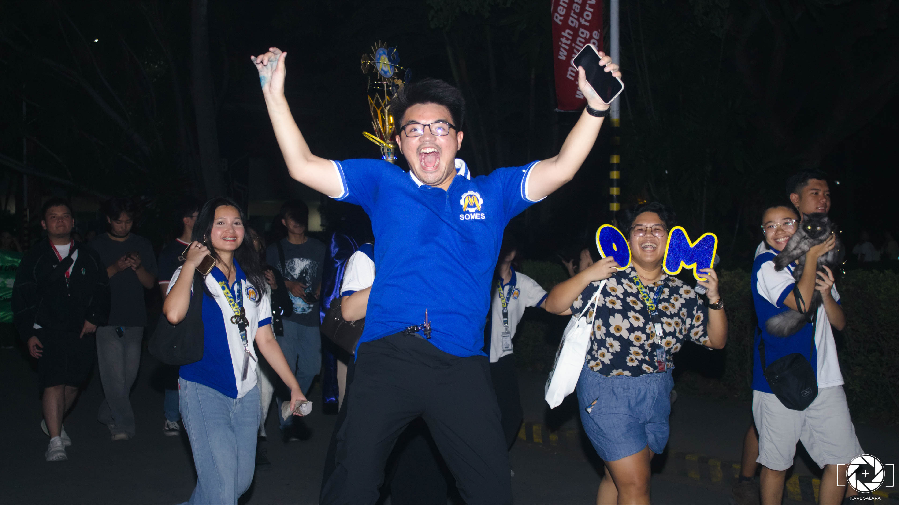
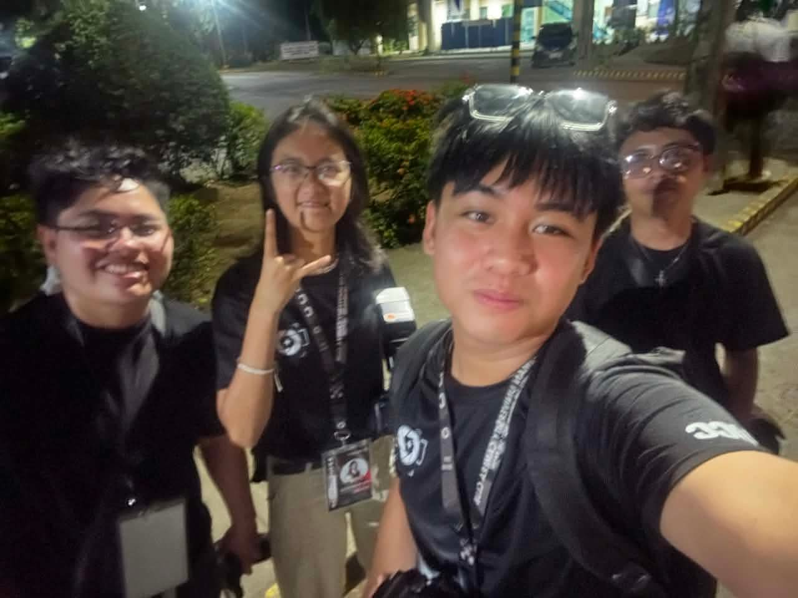
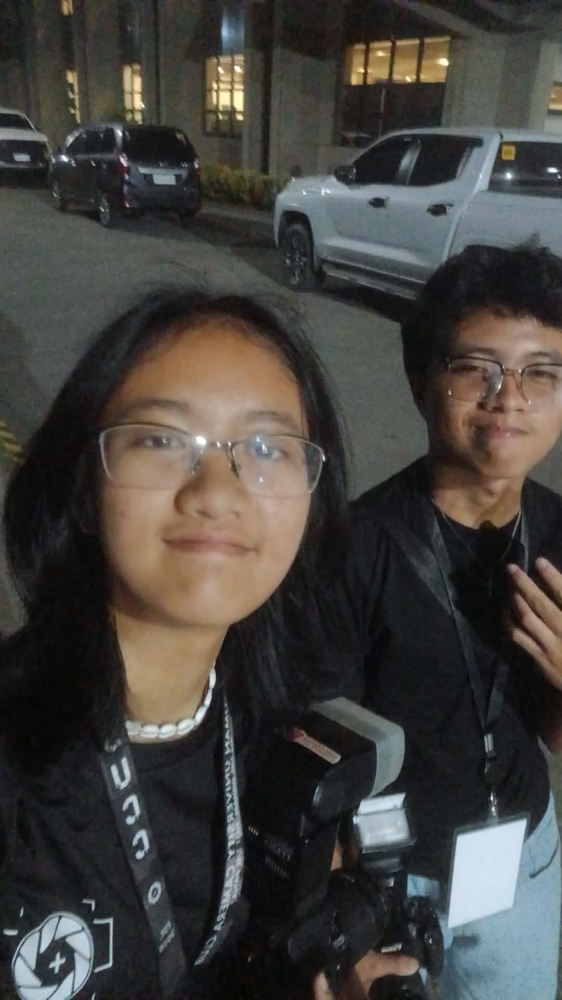
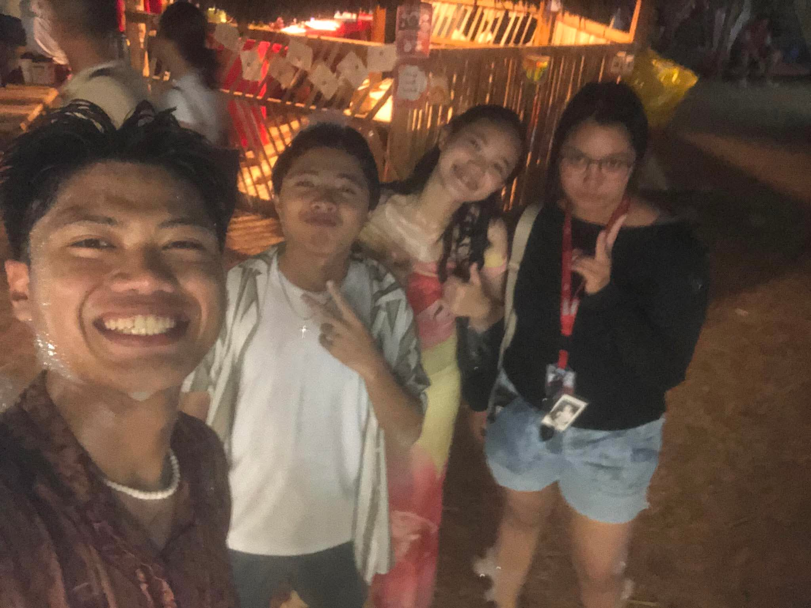
Akwechella
August 20, 2026, 6:00 PM
1 point
Akwechella
August 20, 2026, 6:00 PM 1 pointReflection
I attended Akwechella on August 20, 2026, at the Hibalag Grounds with my friends Divine, Axel, and Elysia. It was a typical university acquaintance party with concerts, performances, food stalls, and a foam party. We started by eating at one of the food stalls before eventually joining the party. I was just one of the audience members and spent the night with my friends.
The part I enjoyed the most was the foam party featuring Wilfreedo. I was not familiar with most of their original songs, but I still enjoyed the melodies and rhythms. It became one of the most chaotic nights I have experienced because I am not really someone who usually goes to parties. We ended up completely wet after the foam party, and I even remember being really full from eating before we started partying. Despite the chaos, it was a really fun experience.
Akwechella made me realize that I am probably not the type of person who enjoys partying all the time. I find it more natural for me to participate by performing rather than simply jumping around and enjoying the music as an audience member. However, I still appreciated the experience because I was able to enjoy it with my friends. I would definitely do it again with them, but I probably would not enjoy it as much if I went alone.
Because of this activity, I am more aware of the kind of experiences I enjoy while also realizing that sometimes it is worth stepping outside my comfort zone and simply having fun with my friends.
Evidence of participation
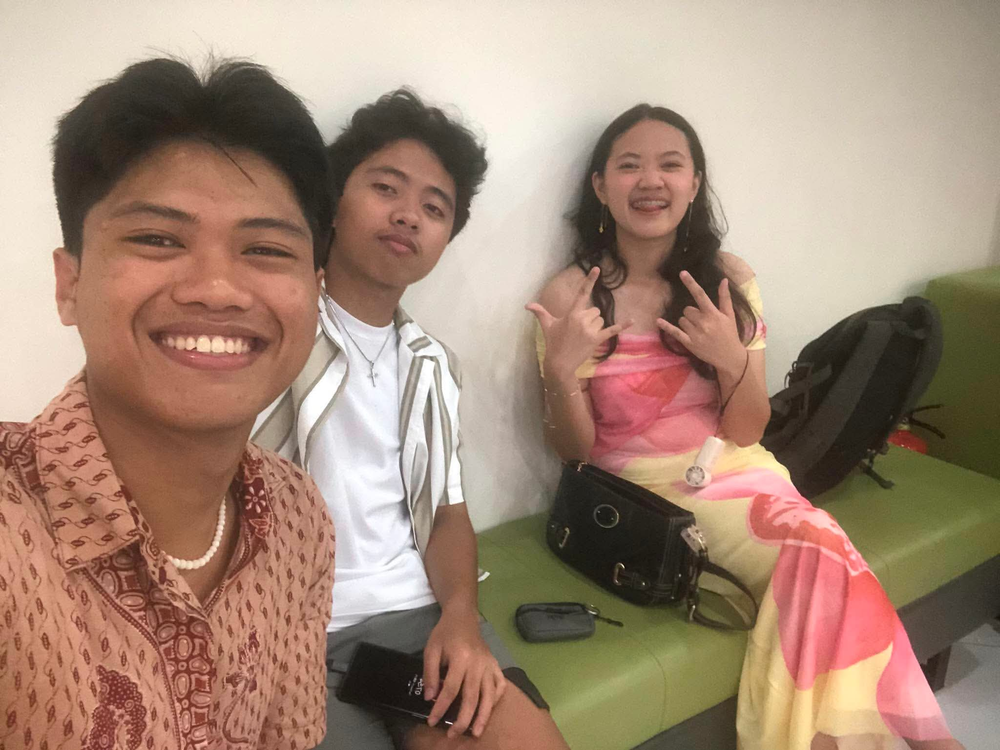
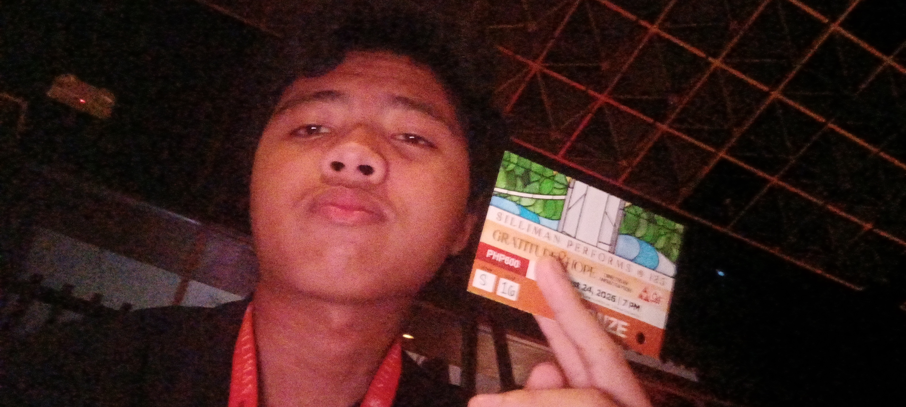
Silliman Performs @ 125th
August 24, 2026, 7:00 PM
1 point
Silliman Performs @ 125th
August 24, 2026, 7:00 PM 1 pointReflection
On August 24, 2026, I attended Silliman Performs @ 125 at the Luce Auditorium. The event featured different performances celebrating Silliman University's 125th anniversary. I attended by myself as an audience member and watched the entire show.
I enjoyed every part of the show, and it became one of the best performances I have watched at the Luce Auditorium. It was also the biggest performance I had personally witnessed in one of Silliman's cultural shows. Although I cannot remember every specific detail of the program, the overall scale and quality of the performances left a strong impression on me. It made me appreciate how much effort Silliman University puts into its Founder’s Week and Hibalag celebrations.
The experience gave me a greater appreciation for the amount of preparation and effort that goes into Silliman's cultural events. It also made me more interested in attending similar performances in the future because I enjoy seeing how the university brings people together through the arts and performances.
Because of this activity, I am more appreciative of Silliman University's efforts to preserve and showcase its culture through large-scale performances and events.
Evidence of participation
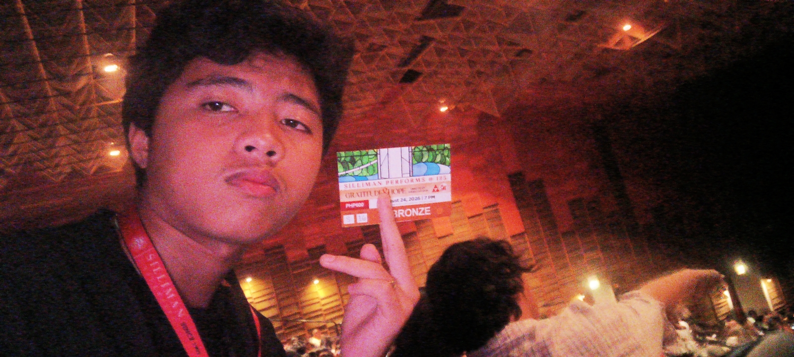
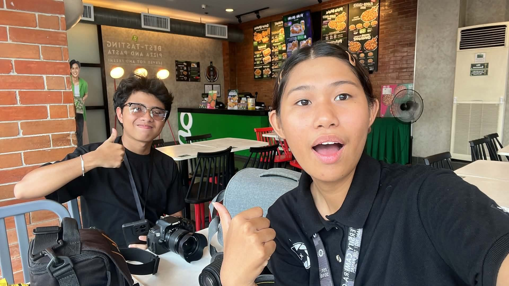
Parada Sillimaniana
August 27, 2026, 1:00 PM
1 point
Parada Sillimaniana
August 27, 2026, 1:00 PM 1 pointReflection
On August 27, 2026, I attended the Parada Sillimaniana, which started from Portal West and passed through Greenwich Pizza, Caltex, Abenson, KUKU, and ended at the Cimafranca Ballfield. The parade brought together bands, alumni, students, faculty and staff, different departments, and students from different schools around Dumaguete. I attended with my SUCC elder, Blaise Majella, and my role was mainly as a photographer.
Since I was focused on taking photos, I did not experience the event in the same way as the participants. Still, it was fun photographing an event this huge, although the afternoon heat made it more challenging. The experience tested my shooting skills, patience, endurance, and resilience. One thing I realized was the importance of not overshooting. I took around 1,000 photos but only ended up posting about 80, so I learned that being more selective while shooting can make the process much easier.
I would definitely photograph the parade again. Next time, I want to be more intentional with the photos I take instead of simply taking as many shots as possible. More importantly, the experience made me realize that Silliman is not just a campus—it is a whole community made up of different people, groups, and schools coming together.
Because of this activity, I am more mindful of how I photograph events and more appreciative of the community that makes Silliman more than just a campus.
Evidence of participation
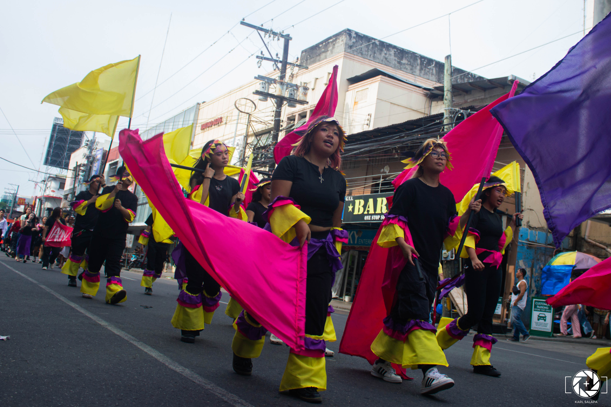
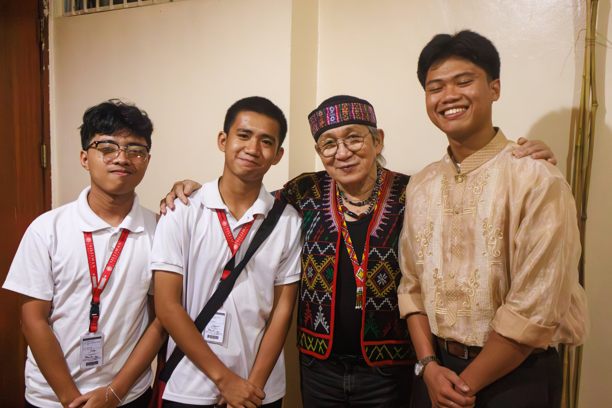
Ang Bagong Asin Concert
September 19, 2026, 7:00 PM
1 point
Ang Bagong Asin Concert
September 19, 2026, 7:00 PM 1 pointReflection
The Peace Concert gave me an opportunity to reflect on justice, Philippine history, power, culture, and hope through the stories and songs presented by ASIN. One thing that stood out to me was how their setlist seemed to follow a chronological progression of Philippine history, with stories connecting the different periods and themes. The concert connected the story of Joshua and the cycle presented in Judges with experiences that can be related to Philippine history and society. Aside from the historical and social discussions, I also enjoyed the musical aspect of the concert. I especially liked the nostalgic feeling I got from the instruments and songs because they reminded me of the times when I would go with my grandfather to his farm and stay in his little hut. There was even an unexpectedly funny moment when one of the female members of the band suddenly said a Bisaya curse word while telling a story, which caught many of us off guard.
The concert made me think about justice and how different people can have completely different perspectives depending on where they stand. When discussing the story of Joshua and the taking of land in Jericho, I initially thought about it from the perspective of the people who already lived there. However, I also realized that people involved in conflicts over land can view the same situation differently depending on their position. This led me to connect the discussion to the history of colonization in the Philippines and to the importance of protecting marginalized communities, their land, and their culture. I also reflected on the cycle of corruption and the way power can affect people. I think that greed can cause people to prioritize their own interests over the people they are supposed to serve. At the same time, the concert made me realize that problems should not always be left for a leader or a "hero" to solve. People also have a responsibility to become informed, recognize what is wrong, and contribute to positive change. Another important realization for me was about Filipino culture. Before this experience, I did not think very deeply about how valuable Filipino culture could be. However, hearing the music and stories during the concert made me realize that some cultural traditions can gradually be forgotten by younger generations. The nostalgia I felt while listening to the music also showed me that culture can be connected to personal memories and relationships. Music was able to communicate stories and emotions that I might not have experienced in the same way through a lecture or discussion alone.
Because of this experience, I realized that I can contribute to breaking negative cycles by being more informed and responsible about the issues around me. As a student, I can avoid blindly believing or sharing information and instead make an effort to look for correct and verified information. I can also speak up when I believe something is wrong rather than simply staying silent. When I become eligible to vote, I should also take that responsibility seriously and make informed decisions. More importantly, I should not normalize corruption or wrongdoing even when they appear in small situations around me. Instead of always waiting for someone else to solve a problem, I should be willing to help in whatever way I can. The experience also encouraged me to appreciate and preserve Filipino culture. I believe younger generations should be given opportunities to learn about their history, traditions, music, and stories so these things can continue to be passed on. For me, being a prophetic voice means having the courage to speak up when something is wrong and to encourage others to recognize what is right. Even though one person cannot immediately change everything, I believe change can begin with individual responsibility, awareness, and the willingness to bring hope and peace to others.
Because of this activity, I am more aware of the importance of speaking up, staying informed, and appreciating Filipino culture, while remembering that meaningful change can begin with the choices and actions I make myself.
Evidence of participation
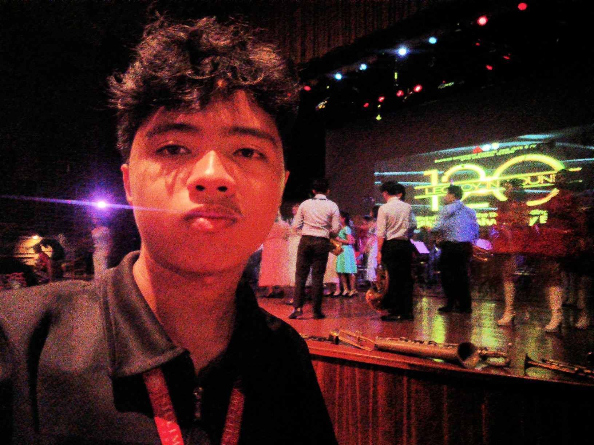
120th Legacy in Sound
October 2, 2026, 7:00 PM
1 point
120th Legacy in Sound
October 2, 2026, 7:00 PM 1 pointReflection
I attended the 120th Legacy in Sound concert at the Luce Auditorium on October 2, 2026. I attended by myself since my friends were busy, and my role was simply as an audience member. The event featured different musical performances, including a performance by the Silliman Band.
I enjoyed the whole show, but I especially liked the Silliman Band's performances of themes and songs from popular films such as The Lion King, Frozen, How to Train Your Dragon, and Pirates of the Caribbean. Hearing these songs again made me feel nostalgic because they reminded me of the childhood movies I used to watch. I also had a memorable moment when I took a photo of one of the performers and later saw that the performer featured the photo on her social media.
The concert made me realize how much music has been part of Silliman's identity and how the university has dedicated a place for music in its culture. It also made me interested in learning more about Silliman's cultural history. Since music has always been a part of my life, I would definitely attend another event like this in the future.
Because of this activity, I am more interested in learning about Silliman's musical and cultural history while continuing to appreciate music as an important part of my own life.
Evidence of participation
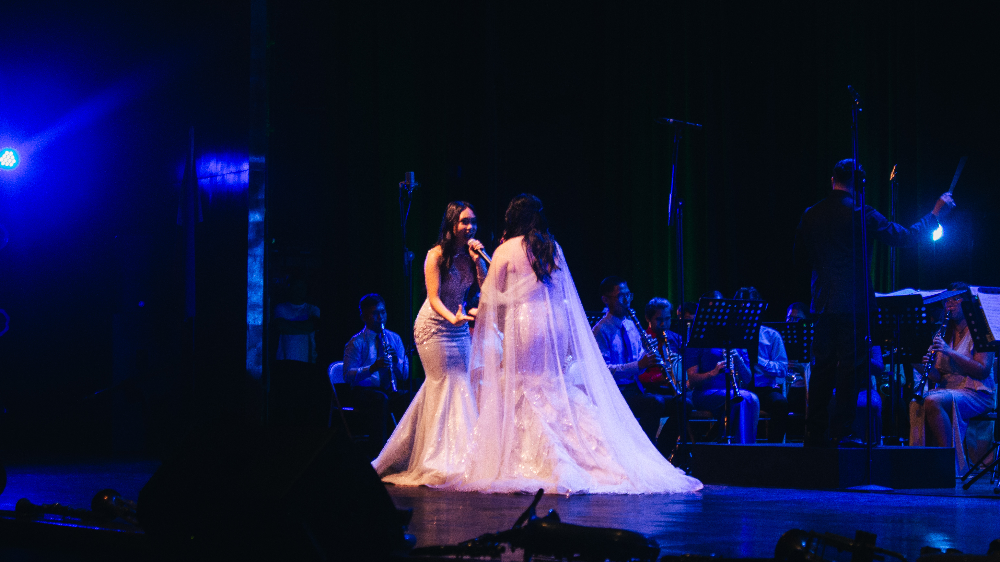
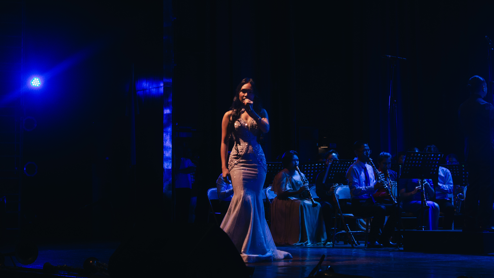
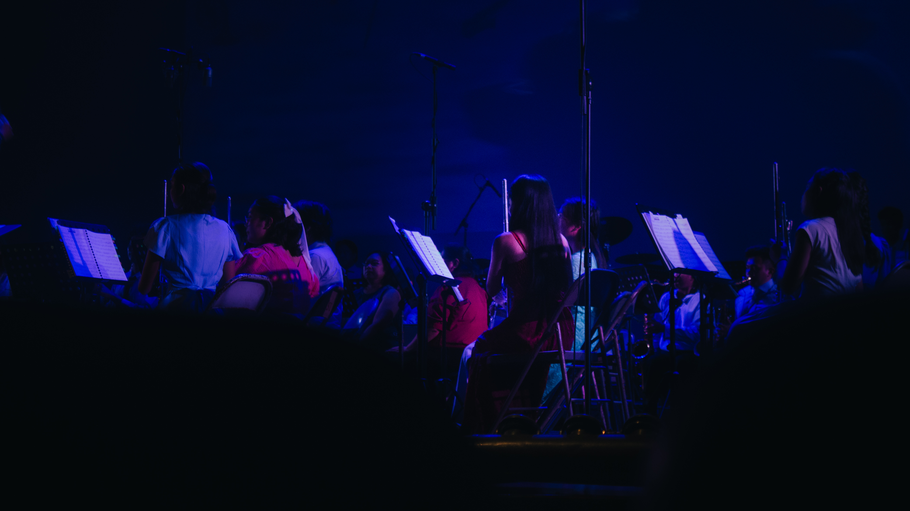
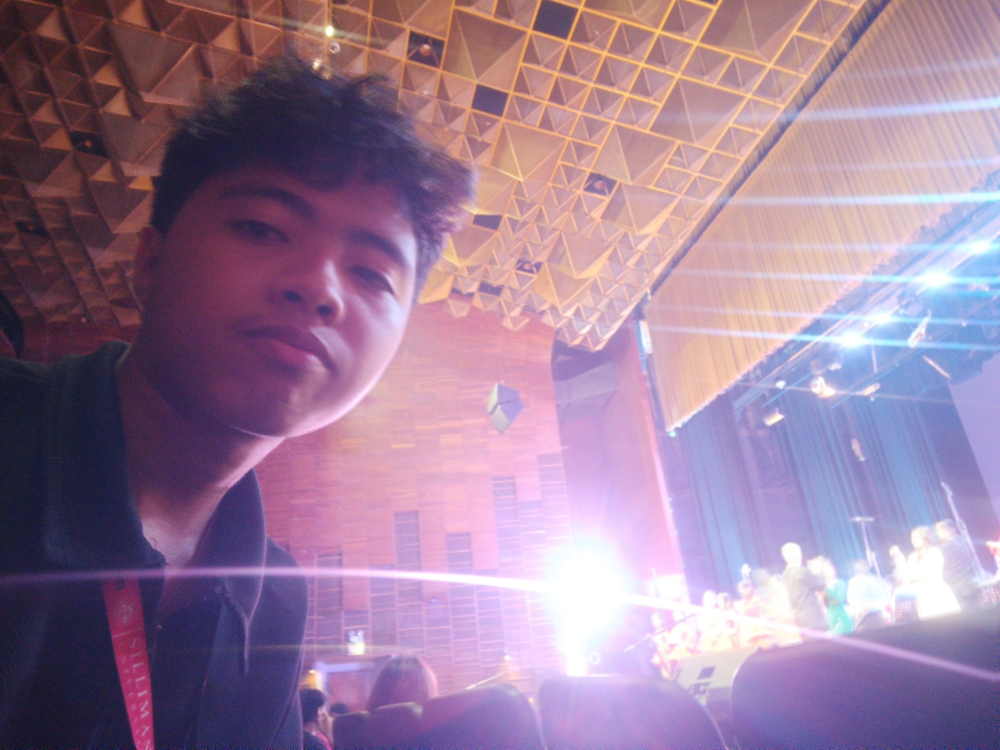